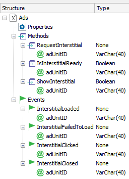
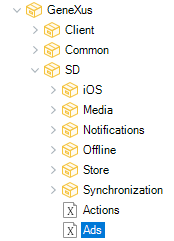
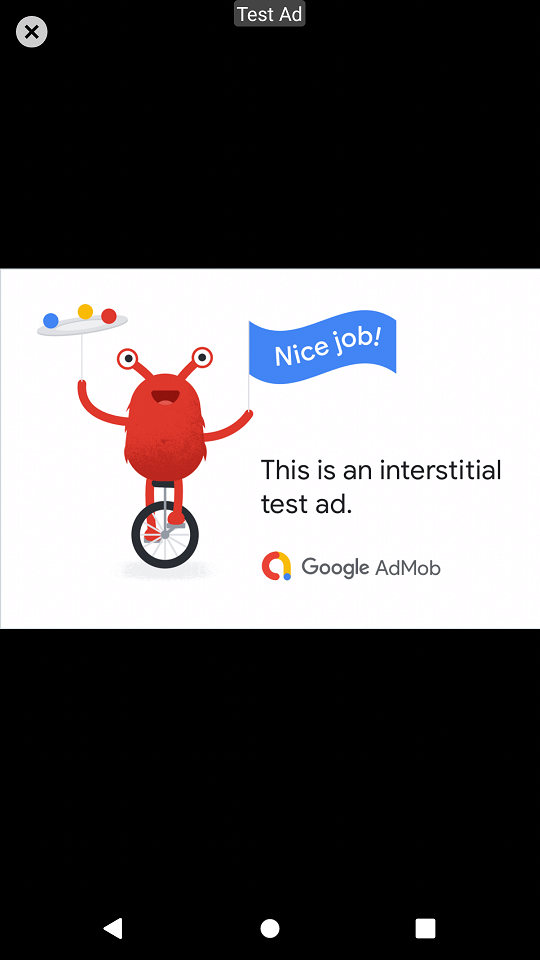

Allows managing interstitial ads in mobile applications. Interstitial ads are adverts displayed in full screen, completely covering the interface of the application until the user closes them. They are typically shown between application transitions, between activities, or during the pause between levels in some games. The user can tap and be redirected to the ad's destination or close it and return to the application.
|  |  |
Platforms: Android, Apple.
It doesn't have any.
Loads the interstitial. This has to be called in advance so that it is ready when the user wants to show it.
Return: None
Parameters: adUnitID:VarChar(40).
Checks if the interstitial has loaded correctly, and is ready to be shown; returns True if it is.
Return: Boolean
Parameters: adUnitID:VarChar(40).
Shows the interstitial if ready and returns True; otherwise, it returns False.
Return: Boolean
Parameters: adUnitID:VarChar(40).
Note
Called when the interstitial ad loaded successfully.
Input: adUnitID:VarChar(40).
Output: none
Called when the interstitial ad failed to load.
Input: adUnitID:VarChar(40).
Output: none
Called when the user clicks the ad. The ad is not closed when clicked.
Input: adUnitID:VarChar(40).
Output: none
Called when the interstitial ad is closed. The ad closes, and the event is called.
Input: adUnitID:VarChar(40).
Output: none
Event 'ShowInterstitial'
Composite
&AdUnitId = !"TEST"
Ads.RequestInterstitial(&AdUnitId)
&success = Ads.ShowInterstitial(&AdUnitId)
if not &success
msg(!"Failed!")
endif
EndComposite
Endevent
When this event is executed, you will see the following:

This external object is available as of GeneXus 17 upgrade 5.